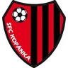

Posledný zápasU13 Mladší žiaci
 ŠK Blava 1928 U13domáci
ŠK Blava 1928 U13domáci TJ FC Kátlovcehostia
TJ FC KátlovcehostiaVýsledok 5:0
Výhrapolčas 2:0
Návrh webu · nie je to oficiálna stránka klubu
IV. liga U13 ObFZ Trnava, 3. miesto z 10
Posledný zápasU13 Mladší žiaci
ŠK Blava 1928 U13domáciTJ FC KátlovcehostiaVýsledok 5:0
Výhrapolčas 2:0
6–1–2výhry, remízy a prehry vo všetkých súťažiach, skóre 43:11

SFC Kopánka B doma, 14. kolo 10:30IV. liga U13 ObFZ Trnava
| # | Tím | Z | V | R | P | Skóre | B |
|---|---|---|---|---|---|---|---|
| 1 | 9 | 8 | 1 | 0 | 59:6 | 25 | |
| 2 | 9 | 7 | 0 | 2 | 43:15 | 21 | |
| 3 | 9 | 6 | 1 | 2 | 43:11 | 19 | |
| 4 | 9 | 6 | 1 | 2 | 39:16 | 19 | |
| 5 | 9 | 4 | 3 | 2 | 40:17 | 15 | |
| 6 | SFC Kopánka B | 9 | 4 | 1 | 4 | 30:28 | 13 |
| 7 | 9 | 2 | 2 | 5 | 13:21 | 8 | |
| 8 | 9 | 2 | 1 | 6 | 14:24 | 7 | |
| 9 | 9 | 1 | 0 | 8 | 12:48 | 3 | |
| 10 | TJ Sokol Trstín | 9 | 0 | 0 | 9 | 4:111 | 0 |
Hráči, ktorí v kalendárnom roku 2026 nastúpili alebo boli v nominácii na zápas (podľa Sportnetu). Pri mládeži uvádzame len mená.